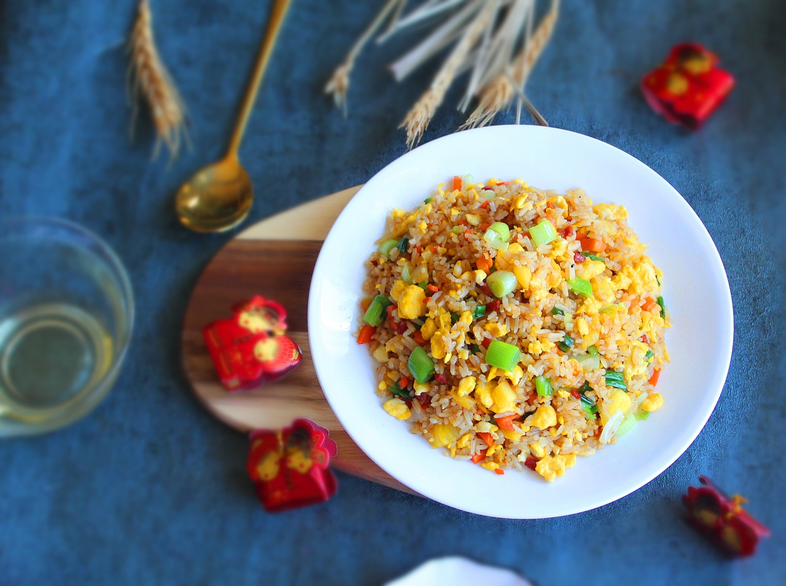

Pineapple Fried Rice

Description
Pineapple fried rice is a delectable and vibrant dish that seamlessly
fuses sweet and savory flavors with a hint of tropical indulgence. This
Thai-inspired creation features fluffy grains of cooked rice stir-fried to
perfection, adorned with an array of colorful vegetables such as bell
peppers, peas, and carrots. The star of the show, succulent chunks of
golden pineapple, imparts a delightful natural sweetness that contrasts
harmoniously with the savory elements. Often enriched with tender pieces of
cooked chicken, shrimp, or tofu, this dish offers a balanced protein
profile. A medley of seasonings like soy sauce, curry powder, and fragrant
spices elevate the taste, while garnishes of chopped scallions, toasted
cashews, and fresh cilantro add both crunch and freshness. With its
symphony of flavors and visually appealing presentation, pineapple fried
rice stands as a testament to the culinary magic that can emerge from the
fusion of diverse ingredients.
Ingredients
- 2 tablespoons coconut oil or quality vegetable oil, divided
- 2 eggs, beaten with a dash of salt
- 1 ½ cups chopped fresh pineapple
- 1 large red bell pepper, diced
- ¾ cup chopped green onions (about ½ bunch)
- 2 cloves garlic, pressed or minced
- ½ cup chopped raw, unsalted cashews
- 2 cups cooked and chilled brown rice*, preferably long-grain brown
jasmine rice
- 1 tablespoon reduced-sodium tamari or soy sauce
- 1 to 2 teaspoons chili garlic sauce or sriracha
- 1 small lime, halved
- Salt, to taste
- Handful of fresh cilantro leaves, torn into little pieces, for
garnishing
Steps
- Heat a large wok, cast iron skillet or non-stick frying pan over
medium-high heat and place an empty serving bowl nearby. Once the pan
is hot enough that a drop of water sizzles on contact, add 1 teaspoon
oil. Pour in the eggs and cook, stirring frequently, until the eggs are
scrambled and lightly set, about 30 seconds to 1 minute. Transfer the
eggs to the empty bowl. Wipe out the pan if necessary with a paper
towel (be careful, it’s hot!).
- Add 1 tablespoon oil to the pan and add the pineapple and red pepper.
Cook, stirring constantly, until the liquid has evaporated and the
pineapple is caramelized on the edges, about 3 to 5 minutes. Then add
the green onion and garlic. Cook until fragrant while stirring
constantly, about 30 seconds. Transfer the contents of the pan to your
bowl of eggs.
- Reduce the heat to medium and add the remaining 2 teaspoons oil to
the pan. Pour in the cashews and cook until fragrant, stirring
constantly, about 30 seconds. Add the rice to the pan and stir to
combine. Cook until the rice is hot, stirring occasionally, about 3
minutes.
- Pour the contents of the bowl back into the pan and stir to combine,
breaking up the scrambled eggs with your spoon. Cook until the contents
are warmed through, then remove the pan from heat. Add the tamari and
chili garlic sauce, to taste. Squeeze the juice of ½ lime over the dish
and stir to combine. Season to taste with salt and set aside.
- Slice the remaining ½ lime into 4 wedges. Transfer the stir-fry to
individual serving bowls and garnish each bowl with a lime wedge and a
light sprinkle of cilantro. Serve with bottles of tamari and chili
garlic sauce or sriracha on the side, for those who might want to add
more to their bowls.
Recipe taken from
COOKIE+kate
; description generated by
ChatGPT